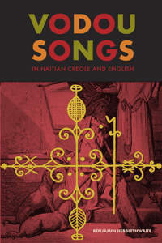

The first comprehensive collection of Vodou sacred literature in bilingual form
The first comprehensive collection of Vodou sacred literature in bilingual form


 The first comprehensive collection of Vodou sacred literature in bilingual form
The first comprehensive collection of Vodou sacred literature in bilingual form

|  |
Vodou Songs in Haitian Creole and EnglishChante Vodou an krey�l ayisyen ak angleWith the editorial assistance of Joanne Bartley, Chris Ballengee, Vanessa Brissault, Erica Felker-Kantor, Andrew Tarter, Quinn Hansen, and Kat WarwickBenjamin Hebblethwaitepaper EAN: 978-1-43990-602-6 (ISBN: 1-4399-0602-5) |
"Benjamin Hebblethwaite�s Vodou Songs in Haitian Creole and English is an extraordinary compilation of the sacred oral traditions of Haiti. Hebblethwaite brings the combined talents of an ethnographer and linguist to the translation and interpretation of over six hundred Vodou songs, spanning several decades, contexts, and moods. Many are from important collections that have never been published. Accompanying this remarkable project is a hundred-page dictionary of Vodou terms, which will be an invaluable resource for students of Haitian culture and religion."
—Joseph M. Murphy, Georgetown University, author of Working the Spirit: Ceremonies of the African Diaspora
Vodou songs constitute the living memory of Haitian Vodou communities, and song texts are key elements to understanding Haitian culture. Vodou songs form a profound religious and cultural heritage that traverses the past and refreshes the present. Offering a one-of-a-kind research tool on Vodou and its cultural roots in Haiti and pre-Haitian regions, Vodou Songs in Haitian Creole and English provides a substantial selection of hard to find or unpublished sacred Vodou songs in a side-by-side bilingual format.
Esteemed scholar Benjamin Hebblethwaite introduces the language, mythology, philosophy, origins, and culture of Vodou through several chapters of source songs plus separate analytical chapters. He guides readers through songs, chants, poems, magical formulae, invocations, prayers, historical texts and interviews, as well as Haitian Creole grammar and original sacred literature. An in-depth dictionary of key Vodou terms and concepts is also provided.
This corpus of songs and the research about them provide a crucial understanding of the meaning of Vodou religion, language, and culture.
Excerpt available at www.temple.edu/tempress
"Vodou Songs in Haitian Creole and English gives English-language readers access, for the first time, to a remarkably rich and diverse corpus of songs. Hebblethwaite, a leading expert in Haitian Krey�l, provides excellent translations and lucid linguistic and cultural analysis. He shows how Vodou songs bring together theology, history, and poetry. A vital resource for all those interested in Haitian culture and religion, as well as for those teaching and learning Haitian Krey�l."
— Laurent Dubois, Duke University, author of Haiti: The Aftershocks of History
"Hebblethwaite brings a needed resource to those wishing to better understand the role of voodoo in Haiti and the Haitian diaspora. Combining collections and offering translations of material (some for the first time in English), the author provides insight into to the Sapir-Whorf hypothesis in action. .... Most important is the author's assertion that the oral tradition, common in preliterate cultures, is best displayed in the persistence of cultural information embedded in the faith's songs.... [T]his volume will be of great value to those already well versed in the history and cultural analysis of the Ife-based West African religions in the New World and elsewhere. Summing Up: Recommended."
—CHOICE
"Hebblethwaite offers an exemplary entr�e into the textual universe of the songs of Haitian Vodou, one of the most important features of the religion. Compendiums of Haitian Vodou song texts in English and Haitian Creole are uncommon making this book all the more important.... The book's strengths make it useful for students and specialists of Caribbean religions, linguistics, and history. It is clearly written and makes a contribution to Haitian studies by emphasizing the critical importance of Vodou song texts as literature."
—Journal of West Indian Literature
"Benjamin Hebblethwaite�s masterful collection of Vodou Songs in Haitian Creole and English is a major contribution to many fields of contemporary scholarship.... The real significance of Vodou Songs lies in its bilingual presentation of a body of songs previously accessible only to Haitian Creole speakers.... Undoubtedly, Vodou Songs will open up new vistas in the study of Haitian literature, culture, language, and society, and establish a new benchmark in both research philosophy and practice."
—The Caribbean Review of Books
Acknowledgments
1. The World of Vodou Songs • Benjamin Hebblethwaite
2. Historical Songs • Benjamin Hebblethwaite
3. Jacques Roumain's, Werner A. Jaegerhuber's and Jean Price-Mars�s Songs • Benjamin Hebblethwaite
4. Milo Marcelin�s Songs • Benjamin Hebblethwaite and Joanne Bartley
5. Laura Boulton�s Songs • Benjamin Hebblethwaite and Joanne Bartley
6. J.L.�s Songs • Benjamin Hebblethwaite and Chris Ballengee
7. Benjamin Hebblethwaite�s Songs • Benjamin Hebblethwaite
8. Harold Courlander�s Songs • Benjamin Hebblethwaite and Erica Felker-Kantor
Appendix A: Dictionary of Vodou Terms • Benjamin Hebblethwaite, with contributions from Joanne Bartley, Andrew Tarter, Quinn Hansen and Kat Warwick
Appendix B: Outline of Haitian Creole Grammer • Benjamin Hebblethwaite and Vanessa Brissault
Notes
References
Index
Photo Gallery
Benjamin Hebblethwaite is an Assistant Professor in the Department of Languages, Literatures and Cultures at the University of Florida. He is the coeditor (with Jacques Pierre) of Arthur Rimbaud's prose poem, Une saison en enfer / Yon sezon matchyav�l.
Religion
Latin American/Caribbean Studies
Anthropology
© 2015 Temple University. All Rights Reserved. This page: http://www.temple.edu/tempress/titles/2138_reg.html.